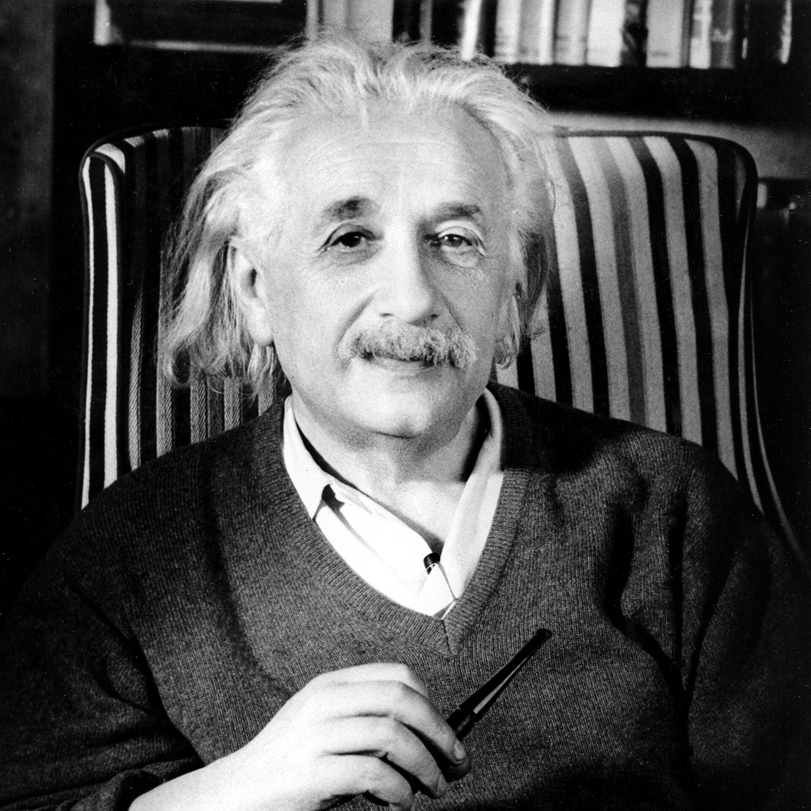

Исаак Ньютон
 Ньютон родился в семье фермера, но ему повезло с хорошими друзьями, и он смог вырваться из сельской жизни в научную среду. Благодаря этому появился великий учёный, который смог открыть не один закон физики и астрономии и сформулировать множество важных теорий в отраслях математики и физики.
Семья и детство
Исаак был сыном фермера из Вулсторпа. Его отец был из небогатых крестьян, которые волею случая нажили землю и благодаря этому преуспели. Но до рождения Исаака его отец не дожил — и умер за несколько недель до этого. Мальчика назвали в его честь.
Когда Ньютону было три года, его мать снова вышла замуж — за почти втрое старшего за себя богатого фермера. После рождение ещё троих детей в новом браке, Исааком начал заниматься брат его матери — Уильям Эйскоу. Но дать хоть какое-либо образование дядя Ньютону не мог, поэтому мальчик был предоставлен сам себе — играл собственноручно сделанными механическими игрушками, кроме того, он был немного замкнутым.
Новый муж матери Исаака прожил с ней всего семь лет и умер. Половина наследства досталась вдове, и та сразу переписала всё на Исаака. Несмотря на то, что мать вернулась домой, внимания мальчику она почти не уделяла, поскольку младшие дети требовали его ещё больше, а помощниц у неё не было.
Двенадцатилетним Ньютон пошёл учиться в школу в соседнем городке Грэнтем. Чтобы каждый день не возвращаться несколько миль домой, его поселили в доме у местного аптекаря мистера Кларка. В школе мальчик «расцвёл»: он жадно хватался за новые знания, учителя были в восторге от его ума и способностей. Но уже через четыре года матери потребовался помощник и она решила, что 16-летний сын вполне сможет справиться с фермой.
Но даже вернувшись домой, Исаак не спешит решать хозяйственные проблемы, а читает книги, пишет стихи и продолжает заниматься придумыванием различных механизмов. Поэтому знакомые обратились к его матери, чтобы та вернула парня в школу. Был среди них и преподаватель Тринити-колледжа, знакомый того самого аптекаря, у которого Исаак жил во время учёбы. Общими усилиями Ньютон поехал поступать в Кембридж.
Университет, чума и открытия
В 1661 году парень успешно прошёл экзамен с латыни, и его зачислили в колледж Святой Троицы при Кембриджском университете как студента, который вместо оплаты за учёбу выполняет разные поручение и работы на благо альма матер.
Поскольку жизнь в Англии в те годы была весьма тяжёлой, то не лучшим делом обстояли дела и в Кембридже. Биографы сходятся на мысли, что именно годы в колледже закалили характер учёного и его желание доходить до сути предмета собственными усилиями. Через три года он уже добился стипендии.
В 1664 году одним из преподавателей Ньютона стал Исаак Барроу, который привил ему любовь к математике. В те годы Ньютон делает своё первое открытие в математике, известное сейчас как Бином Ньютона.
Через несколько месяцев учёбу в Кембридже прекратили из-за эпидемии чумы, которая разрасталась в Англии. Ньютон вернулся домой, где продолжал свои научные труды. Именно в те годы он начал разрабатывать закон, который со времен получил имя Ньютона-Лейбница; в родном доме он открыл, что белый цвет — не что иное, как смесь всех цветов, и назвал явление «спектром». Тогда же он открыл свой известный закон всемирного тяготения.
То, что было чертой Ньютоновского характера, и было не слишком полезно для науки — это его излишняя скромность. Некоторые свои исследования он публиковал лишь через 20-30 лет после их открытий. Некоторые нашлись спустя три столетия после его смерти.
В 1667 Ньютон вернулся в колледж, а через год стал магистром, его пригласили поработать преподавателем. Но читать лекции Исааку было не слишком по душе, да и особенной популярностью среди учеников он не пользовался.
В 1669 году разные математики начали публиковать свои варианты разложений в бесконечные ряды. Несмотря на то, что Ньютон разработал свою теорию на эту тему уже много лет назад, он её нигде не публиковал. Опять-таки из-за скромности. Но его бывший преподаватель, а теперь уже и друг Барроу уговорил Исаака. И тот написал «Анализ с помощью уравнений с бесконечным числом членов», где изложил коротко и по сути свои открытия. И хотя Ньютон просил не называть своего имени, Барроу не удержался. Так о Ньютоне впервые узнали ученые всего мира.
В этом же году он переходит на место Барроу и становится профессором математики и оптики в колледже Святой Троицы. А поскольку Барроу оставил ему свою лабораторию, Исаак увлекается алхимией и проводит много опытов на эту тему. Но не оставил он и исследование со светом. Так, он разработал свой первый телескоп-рефлектор, который давал увеличение в 40 раз. Новой разработкой заинтересовались при дворе короля, и после презентации перед учёными, механизм оценили как революционный и очень необходимый, особенно для мореплавателей. А Ньютона в 1672 году приняли в Королевское научное общество. Но уже после первой полемики о спектре, Исаак решил покинуть организацию — его утомляли споры и дискуссии, он привык работать в одиночку и без лишней суеты. Его едва удалось уговорить остаться в Королевском обществе, но контакты с ними у учёного стали минимальными.
Рождение физики как науки
В 1684-1686 годах Ньютон писал свой первый великий печатный труд — «Математические начала натуральной философии». Опубликовать её его уговорил ещё один учёный — Эдмонд Галлей, который сперва предложил разработать формулу эллиптического движение по орбите планет, используя формулу закона тяготения. И тут оказалось, что Ньютон уже всё давно решил. Галлей не отступил, пока не выбил из Исаака обещание опубликовать работу, и тот согласился.
Писал её два года, финансировать публикацию согласился сам Галлей, и в 1686 году она наконец увидела мир.
В этой книге учёный впервые использовал понятия «внешняя сила», «масса» и «количество движения». Ньютон давал три базовые закона механики, делал выводы из законов Кеплера.
Первый тираж в 300 экземпляров раскупили за четыре года, что по тогдашним меркам было триумфом. Всего книгу переиздавали трижды ещё при жизни учёного.
Признание и успех
В 1689 Ньютона избирают членом парламента университета Кембриджа. Ещё через год его перебирают вторично.
В 1696, благодаря содействию своего бывшего ученика, а сейчас президента Королевского общества и канцлера Казначейства Монтегю, Ньютон становится хранителем Монетного двора, для чего переезжает в Лондон. Вместе они приводят в порядок дела Монетного двора и проводят денежную реформу с перечеканкой монет.
В 1699 году в его родном Кембридже начали преподавать Ньютоновскую систему мира, ещё через пять лет такой же курс лекций появился и в Оксфорде.
Его также приняли в Парижский научный клуб, сделав Ньютона почётным иностранным членом общества.
Последние годы и смерть
В 1704 Ньютон издал свой труд «Об оптике», через год королева Анна возвела его в рыцари.
Последние годы жизни Ньютона ушли на допечатку «Начал» и подготовку обновлений для следующих изданий. Кроме того, он писал «Хронологию древних царств».
В 1725 году его здоровье серьёзно ухудшилось, и он переехал из шумного Лондона в Кенсингтон. Умер там же, во сне. Его тело похоронили в Вестминстерском аббатстве.
Ньютон родился в семье фермера, но ему повезло с хорошими друзьями, и он смог вырваться из сельской жизни в научную среду. Благодаря этому появился великий учёный, который смог открыть не один закон физики и астрономии и сформулировать множество важных теорий в отраслях математики и физики.
Семья и детство
Исаак был сыном фермера из Вулсторпа. Его отец был из небогатых крестьян, которые волею случая нажили землю и благодаря этому преуспели. Но до рождения Исаака его отец не дожил — и умер за несколько недель до этого. Мальчика назвали в его честь.
Когда Ньютону было три года, его мать снова вышла замуж — за почти втрое старшего за себя богатого фермера. После рождение ещё троих детей в новом браке, Исааком начал заниматься брат его матери — Уильям Эйскоу. Но дать хоть какое-либо образование дядя Ньютону не мог, поэтому мальчик был предоставлен сам себе — играл собственноручно сделанными механическими игрушками, кроме того, он был немного замкнутым.
Новый муж матери Исаака прожил с ней всего семь лет и умер. Половина наследства досталась вдове, и та сразу переписала всё на Исаака. Несмотря на то, что мать вернулась домой, внимания мальчику она почти не уделяла, поскольку младшие дети требовали его ещё больше, а помощниц у неё не было.
Двенадцатилетним Ньютон пошёл учиться в школу в соседнем городке Грэнтем. Чтобы каждый день не возвращаться несколько миль домой, его поселили в доме у местного аптекаря мистера Кларка. В школе мальчик «расцвёл»: он жадно хватался за новые знания, учителя были в восторге от его ума и способностей. Но уже через четыре года матери потребовался помощник и она решила, что 16-летний сын вполне сможет справиться с фермой.
Но даже вернувшись домой, Исаак не спешит решать хозяйственные проблемы, а читает книги, пишет стихи и продолжает заниматься придумыванием различных механизмов. Поэтому знакомые обратились к его матери, чтобы та вернула парня в школу. Был среди них и преподаватель Тринити-колледжа, знакомый того самого аптекаря, у которого Исаак жил во время учёбы. Общими усилиями Ньютон поехал поступать в Кембридж.
Университет, чума и открытия
В 1661 году парень успешно прошёл экзамен с латыни, и его зачислили в колледж Святой Троицы при Кембриджском университете как студента, который вместо оплаты за учёбу выполняет разные поручение и работы на благо альма матер.
Поскольку жизнь в Англии в те годы была весьма тяжёлой, то не лучшим делом обстояли дела и в Кембридже. Биографы сходятся на мысли, что именно годы в колледже закалили характер учёного и его желание доходить до сути предмета собственными усилиями. Через три года он уже добился стипендии.
В 1664 году одним из преподавателей Ньютона стал Исаак Барроу, который привил ему любовь к математике. В те годы Ньютон делает своё первое открытие в математике, известное сейчас как Бином Ньютона.
Через несколько месяцев учёбу в Кембридже прекратили из-за эпидемии чумы, которая разрасталась в Англии. Ньютон вернулся домой, где продолжал свои научные труды. Именно в те годы он начал разрабатывать закон, который со времен получил имя Ньютона-Лейбница; в родном доме он открыл, что белый цвет — не что иное, как смесь всех цветов, и назвал явление «спектром». Тогда же он открыл свой известный закон всемирного тяготения.
То, что было чертой Ньютоновского характера, и было не слишком полезно для науки — это его излишняя скромность. Некоторые свои исследования он публиковал лишь через 20-30 лет после их открытий. Некоторые нашлись спустя три столетия после его смерти.
В 1667 Ньютон вернулся в колледж, а через год стал магистром, его пригласили поработать преподавателем. Но читать лекции Исааку было не слишком по душе, да и особенной популярностью среди учеников он не пользовался.
В 1669 году разные математики начали публиковать свои варианты разложений в бесконечные ряды. Несмотря на то, что Ньютон разработал свою теорию на эту тему уже много лет назад, он её нигде не публиковал. Опять-таки из-за скромности. Но его бывший преподаватель, а теперь уже и друг Барроу уговорил Исаака. И тот написал «Анализ с помощью уравнений с бесконечным числом членов», где изложил коротко и по сути свои открытия. И хотя Ньютон просил не называть своего имени, Барроу не удержался. Так о Ньютоне впервые узнали ученые всего мира.
В этом же году он переходит на место Барроу и становится профессором математики и оптики в колледже Святой Троицы. А поскольку Барроу оставил ему свою лабораторию, Исаак увлекается алхимией и проводит много опытов на эту тему. Но не оставил он и исследование со светом. Так, он разработал свой первый телескоп-рефлектор, который давал увеличение в 40 раз. Новой разработкой заинтересовались при дворе короля, и после презентации перед учёными, механизм оценили как революционный и очень необходимый, особенно для мореплавателей. А Ньютона в 1672 году приняли в Королевское научное общество. Но уже после первой полемики о спектре, Исаак решил покинуть организацию — его утомляли споры и дискуссии, он привык работать в одиночку и без лишней суеты. Его едва удалось уговорить остаться в Королевском обществе, но контакты с ними у учёного стали минимальными.
Рождение физики как науки
В 1684-1686 годах Ньютон писал свой первый великий печатный труд — «Математические начала натуральной философии». Опубликовать её его уговорил ещё один учёный — Эдмонд Галлей, который сперва предложил разработать формулу эллиптического движение по орбите планет, используя формулу закона тяготения. И тут оказалось, что Ньютон уже всё давно решил. Галлей не отступил, пока не выбил из Исаака обещание опубликовать работу, и тот согласился.
Писал её два года, финансировать публикацию согласился сам Галлей, и в 1686 году она наконец увидела мир.
В этой книге учёный впервые использовал понятия «внешняя сила», «масса» и «количество движения». Ньютон давал три базовые закона механики, делал выводы из законов Кеплера.
Первый тираж в 300 экземпляров раскупили за четыре года, что по тогдашним меркам было триумфом. Всего книгу переиздавали трижды ещё при жизни учёного.
Признание и успех
В 1689 Ньютона избирают членом парламента университета Кембриджа. Ещё через год его перебирают вторично.
В 1696, благодаря содействию своего бывшего ученика, а сейчас президента Королевского общества и канцлера Казначейства Монтегю, Ньютон становится хранителем Монетного двора, для чего переезжает в Лондон. Вместе они приводят в порядок дела Монетного двора и проводят денежную реформу с перечеканкой монет.
В 1699 году в его родном Кембридже начали преподавать Ньютоновскую систему мира, ещё через пять лет такой же курс лекций появился и в Оксфорде.
Его также приняли в Парижский научный клуб, сделав Ньютона почётным иностранным членом общества.
Последние годы и смерть
В 1704 Ньютон издал свой труд «Об оптике», через год королева Анна возвела его в рыцари.
Последние годы жизни Ньютона ушли на допечатку «Начал» и подготовку обновлений для следующих изданий. Кроме того, он писал «Хронологию древних царств».
В 1725 году его здоровье серьёзно ухудшилось, и он переехал из шумного Лондона в Кенсингтон. Умер там же, во сне. Его тело похоронили в Вестминстерском аббатстве.
Альберт Эйнштейн
Детство и юность
Альберт Эйнштейн родился 14 марта 1879 года, в городе Ульм, что на юге Германии. Его родители – Герман и Паулина Эйнштейн — имели собственно дело, приносившее стабильный, но небольшой заработок. Когда маленькому Альберту был всего год, семья переехала в Мюнхен, причиной переезда стало основание небольшой компании по продаже электрооборудования, которую отец, Герман Эйнштейн, основал совместно с родным братом Якобом. Здесь же, в Мюнхене, на свет появилась младшая сестра великого ученого – Мария.
Посещая католическую школу, Альберт с ранних лет интересовался самыми разными направлениями в науке, также мальчик изучал религию. Однако уже в 12 лет, прочитав немало познавательных книг (которые были далеко не детскими), будущий ученый пришел к выводу, что Библия не является источником, а тем более гарантом абсолютной праведности. Более того, Альберт, решивший для себя, что Библия – лишь способ воздействия государства на юные умы, раз и навсегда пересмотрел свои взгляды в этом вопросе.
Примерно в этом же возрасте Эйнштейн впервые прочитал «Критику чистого разума» Иммануила Канта, а также же досконально изучил Евклидову геометрию, имея в распоряжении только книги и огромную жажду знаний.
Нельзя сказать, что обучение давалось Эйнштейну легко, хоть он и был всегда одним из первых. Будучи еще учеником гимназии, Эйнштейн осознавал проблематику существующей системы образования: заучивание материала, авторитарное обращение преподавателей с учениками, и как следствие постоянные споры с учителями. Альберт так и не получил документ об окончании школы несмотря на то, что ему даже пришлось остаться жить с родственниками, в то время как вся семья переехала в итальянский городок, в связи с переносом отцовской компании.
Далее был швейцарский Политехникум, который покорился ему не с первого раза. Эйнштейн сдал на отлично экзамены по физике, завалив при этом ряд других предметов. Разглядев в юноше перспективного студента, директор ВУЗа посоветовал ему все же получить среднее образование в одной из школ Швейцарии для дельнейшего обучения в институте. Прислушавшись к совету бывалого, Эйнштейн поступил в школу и, получив аттестат, стал студентом Политехникума.
Окончание университета и начало научной деятельности
Так же, как и в школе, умному, начитанному и одаренному Эйнштейну были совершенно непонятны и неприемлемы методы преподавания профессоров в высшем учебном заведении. Однако, школьных ошибок молодой человек решил не повторять и все-таки получил диплом о приобретении степени в 1900 году. Сдав экзамены хорошо, Эйнштейн, тем не менее, не нашел поддержки среди светил науки – никто не захотел помочь проложить путь в будущее молодому и дерзкому ученому. Этот период в жизни Эйнштейна становится настоящим испытанием – он не может найти работу, денег катастрофически не хватает, а его труды никому не интересны. Доходило до того, что ему просто не было что есть. Впоследствии это сказалось на здоровье – Эйнштейн заработал хроническую болезнь печени, мучившую его до конца жизни.
Но ученый не отчаивался, продолжая упорно заниматься физикой. Удача пришла к нему в лице бывшего одногруппника, который и помог найти ученому работу. Однако трудиться пришлось не по специальности – Энштейну предстояло занять должность эксперта по оценке в Федеральном Бюро патентования изобретений. Он посвятил себя этому месту на целых семь лет – с 1902 по 1907 год, при этом не забывая ни на секунду о физике. К счастью, его рабочий график позволял уделять достаточное количество времени научным исследованиям.
В 1905 году об Эйнштейне узнала широкая общественность. Профильный немецкий журнал «Анналы физики» опубликовал сразу три работы ученого:
• «Об одной эвристической точке зрения, касающейся возникновения и превращения света». Одна из фундаментальных работ, на которой в дальнейшем строилась наука «квантовая теория»;
• «О движении взвешенных в покоящейся жидкости частиц, требуемом молекулярно-кинетической теорией теплоты». Работа посвящена броуновскому движению и является весомым вкладом в продвижение статистической физики;
• «К электродинамике движущихся тел». Сегодня принято считать, что именно эта статья легла в основу учения под названием «теория относительности».
Нестандартный взгляд на структуру теорий
Исследовательские работы Эйнштейна долго не воспринимались его коллегами по цеху. Дело в том, что они их просто не понимали. Имея довольно специфический взгляд на создание теорий, он был уверен в том, что опыт – единственный источник знания, в то время как теория – это интуитивное творение человеческого разума, а потому оснований для связки эксперимента с теоретической основой не так уж и много. Однако были и те, кто поддержал ученого в его деятельности. Среди них был и Макс Планк, с помощью которого, Эйнштейну позже удалось стать директором берлинского Института физики кайзера Вильгельма.
Общая теория относительности, затмение и мировое признание
Работа над теорией тяготения была долгой и кропотливой и длилась с 1907 по 1915 год. Эйнштейн трудился над новым открытием, взяв за основу принципы теории относительности. Суть работы заключалась в том, что связь между геометрией пространства-времени и полем тяготения является неразрывной. Согласно утверждениям Эйнштейна, пространство-время при наличии тяготеющих масс становится неевклидовым. Конечный результат работы — уравнение, наглядно демонстрирующее суть его теории – было представлено в 1915 году на заседании Академии наук (Берлин). Позже теория будет признана вершиной творчества Альберта Эйнштейна.
Однако до этого события еще много времени, а на момент огласки ОТО ею интересуются немногие. Поворотным в жизни ученого стал 1919 год, когда путем наблюдения получилось проверить один из аспектов теории, в котором утверждалось, что луч света от далекой звезды искривляется полем тяготения Солнца. Для того, чтобы опытным путем проверить теорию, нужно было полное солнечное затмение, а именно оно и наблюдалось в 19-ом году ХХ века, в трех частях земного шара. Заручившись поддержкой астрофизика Артура Эддингтона, экспедиция во главе с Эйнштейном добыла информацию, подтверждавшую общую теорию относительности. Так Альберт Эйнштейн впервые был признан научным обществом во всем мире.
Альберт не желал останавливаться на достигнутом, упорно работая над новыми исследованиями и это приносило свои плоды. Уже в 1921 году Эйнштейн получил Нобелевскую премию за квантовую теорию, стал почетным членом многих научных академий, а его мнение вмиг превратилось из «нестандартного» в «авторитетное». Участвуя в разнообразных мировых конференциях, он дискутировал с передовыми учеными того времени, а их пылкие споры являлись немалым вкладом в продвижение науки не на один шаг вперед. Один из самых знаменитых диалогов произошел с Бором, с которым они обсуждали проблемы квантовой механики.
Жизнь после общей теории относительности
После создания ОТО, Эйнштейн, окрыленный успехом и верующий в свои силы, желает подтвердить это следующим, еще более грандиозным проектом – в его планах создание единой теории всевозможных взаимодействий. Даже иммигрировав в США, в связи с приходом к власти нацистов, Альберт продолжал работать над своей задумкой. Параллельно гений физики преподавал в принстонском Институте фундаментальных исследований.
Однако, его грандиозной теории не было суждено увидеть мир. Из-за скудного объема информации, имевшегося в довоенное время, нереальные усилия, прилагаемые Эйнштейном на протяжении более чем четверти века , оказались напрасными.
Личная жизнь
Первой женой гения стала девушка с сербскими корнями по имени Милеве Марич, преподававшая физику и математику. Их знакомство произошло во время совместной работы над законом гравитации. Женщина родила Эйнштейну троих наследников. Супруги развелись после того, как Марич узнала о тайной переписке мужа с кузиной Эльзой Левенталь, которая стала впоследствии его второй законной женой. Во втором браке Эйнштейн, лишившийся собственных детей (Марич забрала их вместе с собой в Цюрих), воспитывал детей Эльзы от первого брака; общих детей у супругов не было.
Мария Склодовская-Кюри
 Детство и юношество
Мария Склодовская прошла долгий и тернистый путь к мировому признанию, хотя это никогда не было ее основной целью – Мария с малых лет просто была влюблена в науку и жаждала помогать людям. Родившись в многодетной семье, (Мария – самый младший ребенок) она с детства познала горести нищеты и болезни. Ее отец, не зная сна и покоя, пытался вылечить больную туберкулезом мать, бросая все свои силы на алтарь ее здоровья. Но беда не приходит одна – Склодовская-старшая умерла, незадолго до этого проводив в мир иной одну из дочерей. Так Мария впервые столкнулась с потерями взрослой жизни.
Однако даже такие жизненные обстоятельства не смогли сломить дух Марии. Она продолжала упорно заниматься, была требовательной и дотошной – ее работы должны быть лучшими и точка. Нередко чтобы добиться такого результата, Мария жертвовала сном и пищей – поглощенная рабочим процессом, она просто забывала о «земных» потребностях. Конечно, это не могло не сказаться на здоровье девушки – по окончанию школы Марии пришлось на целый год отстраниться от занятий, дабы восстановить истощенный организм.
Образование
Но даже не это стало самой большой преградой на пути к образованию, которое так хотела получить Склодовская. Ограничения, действующие в Российской империи на женское образование и тотальное отсутствие денег – вот что попросту могло сломить Марию. Но ее стремление было просто безгранично — вместе с сестрой Брониславой, Мария придумывает чрезвычайно умный план. В течение определенного времени, пока одна из сестер будет учиться, вторая будет зарабатывать ей на это средства, и наоборот. Первой заветный диплом получила Бронислава – она окончила медицинский университет в Париже благодаря сестре, которая пять лет трудилась гувернанткой. Не забыла о своей части договора и Бронислава. Так 24-летняя Мария оправилась в Сорбонну, в то время как сестра стала упорно трудиться для заработка денег на ее обучение. Склодовская-младшая выбрала для себя факультет естественных наук, который блестяще закончила в 1893 году (первой среди однокурсников). Так она получила научную степень по физике, а через год еще и по математике.
Судьбоносное знакомство с Пьером Кюри и начало совместной деятельности
Париж стал для Складовской новым домом, где для нее открывались новые возможности и перспективы. Здесь же она встретила своего мужа, который стал для нее партнером и опорой во всем.
Мария Складовская познакомилась с будущим мужем – Пьером Кюри – через одногрупника, пригласившего ее однажды в гости к одному из известнейших физиков, бывшего, как и она, выходцем из Польши. Пьер на тот момент был уже довольно известный в научных кругах человек: он управлял лабораторией при Муниципальной школе промышленной физики и химии, был автором ряда важнейших исследований. Их общий друг надеялся, что Пьер даст возможность перспективной и талантливой Марии поработать в лаборатории. Возможно, намерения друга не были столь глобальными, но, в общем, затея удалась — знакомство, случившееся в 1984 году, буквально через год обернулось свадьбой. В браке у пары родилось двое детей – Ирен (1897 год) и Ева (1904 год).
В период рождения первой дочери Ирен, Мария активно искала тему для написания диссертации, в то время как ее супруг уже с успехом получил сою ученую степень. Очень кстати оказалось знакомство семейной пары с физиком Анри Беккерелем, который буквально год назад совершил открытие урановых соединений, которые выдают глубоко проникающие излучения. Мария Кюри заручается поддержкой супруга (который отложил свои текущие работы) для того, чтобы более детально исследовать данное явление.
Первая Нобелевская премия и трагедия в жизни Марии Кюри
Работая сутками напролет, не жалея здоровья и не зная преград, супруги в 1898 году открыли сразу два новых элемента – полоний и радий, однако не сумев выделить ни тот, ни другой элемент в чистом виде, они не могут предоставить необходимых доказательств их существования скептичным химикам. Несмотря на ожоги, являющиеся результатом постоянного излучения, молодая пара исследователей не прекращает работу. В 1902 году им удалось одержать 0,01 грамма хлора радия, а уже в декабре 1903 года им была присуждена Нобелевская премия по физике, в соавторстве которой числился Анри Беккерель. Так Мария была занесена в историю не только как выдающийся химик, но и как первая представительница прекрасного пола, заработавшая своими трудами Нобелевскую премию.
Однако, не только чета Кюри работала над изучением явления радиоактивности. Так в 1903 году ученые Эрнест Резерфорд и Фредерик Содди выдвинули теорию, с которой Кюри согласилась только тремя годами позднее – в 1906 году. В их теории шла речь о том, что радиоактивное излучение является результатом распада атомных ядер.
И Кюри, и Беккерель осознавали всю сложность действия радия на человеческий организм, более того, они понимали, что радий может быть использован для успешного лечения опухолей в организме. Немного позднее предположение подтвердилось, однако Кюри напрочь отказались патентовать экстракционный процесс и тем более извлекать коммерческую выгоду из собственного открытия – это противоречило всем представлениям супругов о свободе доступа к знаниям и никак не соответствовало их идеологическим устоям.
После триумфального открытия жизнь пошла своим чередом – Мария рожает супругу вторую дочь, которую называют Евой (1904 год), Пьер становится преподавателем университета в Сорбонне, а Мария заведующей лаборатории этого же учебного заведения. Материальное состояние семейной пары значительно улучшается. Но порой судьба не дает шанса насладится даже минутой покой и счастья. Жизнь Марии Кюри меняется в один день из-за трагической случайности – ее муж Пьер, переходя дорогу одной из парижских улиц, поскальзывается и попадает под колеса конного экипажа. В один день, лишившись друга, партнера, наставника и любимого человека, Мария впадает в депрессию.
Жизнь продолжается
Проведя несколько месяцев в затворничестве, Кюри понимает, что необходимо двигаться дальше. Она сосредотачивает все свое внимание на воспитании двух дочерей и, конечно же, продолжает научную деятельность. Так, в 1910 году, в сотрудничестве с Дебирном, женщина, после многолетних попыток выделения чистого радия, наконец-то доказывает, что радий – это химический элемент. В 1911 году, после волны скандалов, связанных с возможным включением Кюри в члены Французской академии наук, Мария Кюри становится обладательницей второй Нобелевской премии по химии. И снова она оставляет огромный след в истории – до нее никто не был лауреатом премии дважды, да еще и за такой короткий срок.
Первая мировая война и послевоенные годы
Радиевый институт, учрежденный на базе двух французских образовательных заведений, стал для Кюри обителью. Здесь она возглавила отделение фундаментальных исследований, а также изучала возможности применения радиоактивности в медицинской сфере. Во время войны Мария Кюри, на базе института помогала медикам ставить раненных на ноги с использованием рентгеновских лучей (для обнаружения инородных тел в мышечных тканях).
По окончанию военных действий Мария вернулась в стены родного института, где продолжила свою практику внедрения радиологии в медицину, параллельно руководя научными работами студентов. Ее деятельность распространялась далеко за пределами Франции – она с радостью посещала родную Польшу, наконец добившуюся независимости (1918г.), а в 1921 году отправилась в США, где ей преподнесли один грамм радия для продолжения ее научной деятельности.
Изо дня в день соприкасаясь с радиоактивными веществами практически без защиты, Кюри осознавала всю опасность таких работ для организма. Ее здоровье Кюри стало резко ухудшаться в конце 1930-х годов, а 4 июля 1934 года великой женщины не стало. Диагноз, поставленный врачами — апластическая анемия – был следствием долгих лет работы в сфере радиологии.
Детство и юношество
Мария Склодовская прошла долгий и тернистый путь к мировому признанию, хотя это никогда не было ее основной целью – Мария с малых лет просто была влюблена в науку и жаждала помогать людям. Родившись в многодетной семье, (Мария – самый младший ребенок) она с детства познала горести нищеты и болезни. Ее отец, не зная сна и покоя, пытался вылечить больную туберкулезом мать, бросая все свои силы на алтарь ее здоровья. Но беда не приходит одна – Склодовская-старшая умерла, незадолго до этого проводив в мир иной одну из дочерей. Так Мария впервые столкнулась с потерями взрослой жизни.
Однако даже такие жизненные обстоятельства не смогли сломить дух Марии. Она продолжала упорно заниматься, была требовательной и дотошной – ее работы должны быть лучшими и точка. Нередко чтобы добиться такого результата, Мария жертвовала сном и пищей – поглощенная рабочим процессом, она просто забывала о «земных» потребностях. Конечно, это не могло не сказаться на здоровье девушки – по окончанию школы Марии пришлось на целый год отстраниться от занятий, дабы восстановить истощенный организм.
Образование
Но даже не это стало самой большой преградой на пути к образованию, которое так хотела получить Склодовская. Ограничения, действующие в Российской империи на женское образование и тотальное отсутствие денег – вот что попросту могло сломить Марию. Но ее стремление было просто безгранично — вместе с сестрой Брониславой, Мария придумывает чрезвычайно умный план. В течение определенного времени, пока одна из сестер будет учиться, вторая будет зарабатывать ей на это средства, и наоборот. Первой заветный диплом получила Бронислава – она окончила медицинский университет в Париже благодаря сестре, которая пять лет трудилась гувернанткой. Не забыла о своей части договора и Бронислава. Так 24-летняя Мария оправилась в Сорбонну, в то время как сестра стала упорно трудиться для заработка денег на ее обучение. Склодовская-младшая выбрала для себя факультет естественных наук, который блестяще закончила в 1893 году (первой среди однокурсников). Так она получила научную степень по физике, а через год еще и по математике.
Судьбоносное знакомство с Пьером Кюри и начало совместной деятельности
Париж стал для Складовской новым домом, где для нее открывались новые возможности и перспективы. Здесь же она встретила своего мужа, который стал для нее партнером и опорой во всем.
Мария Складовская познакомилась с будущим мужем – Пьером Кюри – через одногрупника, пригласившего ее однажды в гости к одному из известнейших физиков, бывшего, как и она, выходцем из Польши. Пьер на тот момент был уже довольно известный в научных кругах человек: он управлял лабораторией при Муниципальной школе промышленной физики и химии, был автором ряда важнейших исследований. Их общий друг надеялся, что Пьер даст возможность перспективной и талантливой Марии поработать в лаборатории. Возможно, намерения друга не были столь глобальными, но, в общем, затея удалась — знакомство, случившееся в 1984 году, буквально через год обернулось свадьбой. В браке у пары родилось двое детей – Ирен (1897 год) и Ева (1904 год).
В период рождения первой дочери Ирен, Мария активно искала тему для написания диссертации, в то время как ее супруг уже с успехом получил сою ученую степень. Очень кстати оказалось знакомство семейной пары с физиком Анри Беккерелем, который буквально год назад совершил открытие урановых соединений, которые выдают глубоко проникающие излучения. Мария Кюри заручается поддержкой супруга (который отложил свои текущие работы) для того, чтобы более детально исследовать данное явление.
Первая Нобелевская премия и трагедия в жизни Марии Кюри
Работая сутками напролет, не жалея здоровья и не зная преград, супруги в 1898 году открыли сразу два новых элемента – полоний и радий, однако не сумев выделить ни тот, ни другой элемент в чистом виде, они не могут предоставить необходимых доказательств их существования скептичным химикам. Несмотря на ожоги, являющиеся результатом постоянного излучения, молодая пара исследователей не прекращает работу. В 1902 году им удалось одержать 0,01 грамма хлора радия, а уже в декабре 1903 года им была присуждена Нобелевская премия по физике, в соавторстве которой числился Анри Беккерель. Так Мария была занесена в историю не только как выдающийся химик, но и как первая представительница прекрасного пола, заработавшая своими трудами Нобелевскую премию.
Однако, не только чета Кюри работала над изучением явления радиоактивности. Так в 1903 году ученые Эрнест Резерфорд и Фредерик Содди выдвинули теорию, с которой Кюри согласилась только тремя годами позднее – в 1906 году. В их теории шла речь о том, что радиоактивное излучение является результатом распада атомных ядер.
И Кюри, и Беккерель осознавали всю сложность действия радия на человеческий организм, более того, они понимали, что радий может быть использован для успешного лечения опухолей в организме. Немного позднее предположение подтвердилось, однако Кюри напрочь отказались патентовать экстракционный процесс и тем более извлекать коммерческую выгоду из собственного открытия – это противоречило всем представлениям супругов о свободе доступа к знаниям и никак не соответствовало их идеологическим устоям.
После триумфального открытия жизнь пошла своим чередом – Мария рожает супругу вторую дочь, которую называют Евой (1904 год), Пьер становится преподавателем университета в Сорбонне, а Мария заведующей лаборатории этого же учебного заведения. Материальное состояние семейной пары значительно улучшается. Но порой судьба не дает шанса насладится даже минутой покой и счастья. Жизнь Марии Кюри меняется в один день из-за трагической случайности – ее муж Пьер, переходя дорогу одной из парижских улиц, поскальзывается и попадает под колеса конного экипажа. В один день, лишившись друга, партнера, наставника и любимого человека, Мария впадает в депрессию.
Жизнь продолжается
Проведя несколько месяцев в затворничестве, Кюри понимает, что необходимо двигаться дальше. Она сосредотачивает все свое внимание на воспитании двух дочерей и, конечно же, продолжает научную деятельность. Так, в 1910 году, в сотрудничестве с Дебирном, женщина, после многолетних попыток выделения чистого радия, наконец-то доказывает, что радий – это химический элемент. В 1911 году, после волны скандалов, связанных с возможным включением Кюри в члены Французской академии наук, Мария Кюри становится обладательницей второй Нобелевской премии по химии. И снова она оставляет огромный след в истории – до нее никто не был лауреатом премии дважды, да еще и за такой короткий срок.
Первая мировая война и послевоенные годы
Радиевый институт, учрежденный на базе двух французских образовательных заведений, стал для Кюри обителью. Здесь она возглавила отделение фундаментальных исследований, а также изучала возможности применения радиоактивности в медицинской сфере. Во время войны Мария Кюри, на базе института помогала медикам ставить раненных на ноги с использованием рентгеновских лучей (для обнаружения инородных тел в мышечных тканях).
По окончанию военных действий Мария вернулась в стены родного института, где продолжила свою практику внедрения радиологии в медицину, параллельно руководя научными работами студентов. Ее деятельность распространялась далеко за пределами Франции – она с радостью посещала родную Польшу, наконец добившуюся независимости (1918г.), а в 1921 году отправилась в США, где ей преподнесли один грамм радия для продолжения ее научной деятельности.
Изо дня в день соприкасаясь с радиоактивными веществами практически без защиты, Кюри осознавала всю опасность таких работ для организма. Ее здоровье Кюри стало резко ухудшаться в конце 1930-х годов, а 4 июля 1934 года великой женщины не стало. Диагноз, поставленный врачами — апластическая анемия – был следствием долгих лет работы в сфере радиологии.
Чарльз Дарвин
 Чарльза Дарвина с детства тянуло к биологии. За что бы он ни брался: медицина или теология, — повсюду он получал подсказки в той сфере, которая его интересовала больше всего. Его величайшая работа о происхождении видов — результат многолетней работы и изучения природы человека, животных и растений, стала монументальной для следующих поколений учёных
Детство и школа
Чарлз Дарвин родился в весьма обеспеченной семье. Его отец был крупным финансистом и врачом, поэтому детство мальчика прошло весьма безоблачно. Он был пятым ребёнком из шести родившихся. Один из дедов Чарльза также был учёным — натуралист Эразм Дарвин является отцом его папы. Ещё один дед был очень известным художником.
В семье Дарвинов достаточно легко относились к религиозным вопросам, его отец был весьма свободных взглядов на эти темы: дети принимали причастие в англиканской церкви, а потом ходили на мессы в унитарную, куда их водила мать.
Поскольку он рос в семье учёных, то с детства учился основам биологии и ботаники.
В восемь лет он пошёл учиться в дневную школу, на тот момент он уже увлекается коллекционированием и естественными науками. В том же году умирает его мать и все заботы о шести малышах ложатся на отца, который был достаточно далёк от воспитания детей.
Поэтому осенью 1818 года Чарльза и его старшего брата отдают учиться в первую попавшуюся школу. Отец сразу решает, что дети будут в школе всё время, не возвращаясь домой ни к обеду, ни на выходные. Но это было далеко не главной проблемой. Чарлз увлекался естественными науками, а в школе делали акцент на словесности. Он должен был изучать несколько языков и читать классические рукописи. Поэтому Чарльза воспринимают как посредственного ученика — педагоги не особо обращают внимание на то, чем он занимается во время уроков и после них. Воспользовавшись свободой, он начинает собирать коллекции минералов, ракушек и бабочек. Через несколько лет у него появляется более «взрослое» хобби — охота и химия. Учителей такое поведение не слишком устраивало, но и пенять Чарльзу никто не решался. По окончанию школы ему просто выдали диплом с очень посредственными оценками и на том распрощались со странным воспитанником.
Метания между науками
На летних каникулах, в перерыве между школой и поступлением в университет, Чарлз также охотно помогал отцу в его лечебной практике — вместе они поддерживали бедняков родного города: лечили их от разных болезней и травм.
В 1825 году Чарлз поступает в университет Эдинбурга. На этот раз он собирается учиться медицине. Но и тут ему становится скучно и неинтересно. «Хирургия приносит лишь боль и страдания всему живому!» — решает Дарвин и уже через два года бросает учёбу. Вместо этого он снова находит себе странное увлечение — таксидермию. У бывшего чернокожего раба он учится основам изготовления чучел и заодно удивляется особенностям физиологии разных видов животных.
Но в 1826 году, изучая естественную историю, он знакомится с многими интересными теориями того времени. В частности, его увлекают идеи радикального материализма. Заинтересовавшись теорией эволюции, с основами которой его ознакомил ещё его дед, Дарвин и сам делает небольшие открытия в животном мире.
На втором году обучение он увлекается геологией, общается с плутонистами и нептунистами, но хватает его ненадолго — вскоре страсть к геологии утихает, хотя накопленные знания в этой области ему ещё пригодятся.
Узнав, что сын окончательно забросил учёбу в Эдинбурге, отец предлагает ему стать священником. Для этого Чарлз поступает в церковную школу при Кембриджском университете. Но богословие так же не привлекает Дарвина, как раньше чтение классики. Поэтому лекции он пропускает, вместо этого начинает общаться с энтомологами, заниматься верховой ездой и стрельбой из ружья.
Готовясь к экзаменам, Чарлз читает много книг по теологии. Среди них его очень заинтересовала «Естественная теология». В ней идёт речь об адаптации как Божьем промысле. Кроме того, он познакомился с многими известными учёными, которые в последствии очень повлияли на его жизнь. Среди них был и профессор ботаники Джон Генслоу, именно он очень много подсказал ему в вопросах развития видов растений.
Экспедиция и первые работы
Среди любимых авторов в то время у Дарвина был Александр фон Гумбольдт. Его книга «Личное повествование» настолько зацепила Чарльза, что он решит вместе с друзьями отправится в кругосветное путешествие, в частности, на описанный в книге остров Тенерифе.
Здесь ему немного подсобил профессор Генслоу. Он порекомендовал капитану судна «Бигль» взять Дарвина помощником в экспедицию в Южную Америку. Путешествие должно было длиться пять лет.
Во время экспедиции Дарвин много записывает об особенностях климата и географии увиденных земель, часть своих наблюдений он посылает родственникам и друзьям, а часть — в Кембридж для публикаций. Кроме того, он начинает собирать коллекцию морских животных.
Во время пребывания в Патагонии он обнаруживает огромные окаменелости неизвестного млекопитающего. Сделав некоторые подсчёты, Дарвин делает вывод, что вид исчез совсем недавно, и скорее всего, животное было похоже на огромного ленивца.
Пребывая в Чили, команда «Бигля» стала свидетелем извержения вулкана. Чарлз в свою очередь воочию увидел тектонические изменения, которые произошли буквально за несколько дней.
После возвращения в Великобританию, Дарвин пишет ряд трудов на основании увиденного и начинает работу секретаря Лондонского геологического общества.
В 1839 году он женится, в браке с кузиной Эммою Вэджвуд у них родятся десять детей.
А в 1840-1842 годах выходят его работы: The Journal of a Naturalist, Zoology of the Voyage on the Beagle и The Structure and Distribution of Coral Reefs.
В 1847 году он с женой переезжает из Лондона в городок Даун, что в графстве Кент. Именно там он пишет самую известную свою работу — «Происхождение видов».
Величайшая работа Дарвина
С 1837 года Чарлз вёл дневник, в котором записывал свои соображения по поводу сортов различных растений и пород домашних животных. В этих записях он старался понять, что было первоисточником такого разнообразия флоры и фауны.
В 1842 году вышел первый его очерк на эту тему. Теория учёного заинтересовала его коллег по всему миру. Таким образом он начал переписываться с американским учёным Эйсом Греем, англичанинами Чарльзом Лайелем и Альфредом Уоллесом. Не без помощи этих и других натуралистов он и написал «Происхождение видов путём естественного отбора, или Сохранение благоприятствуемых пород в борьбе за жизнь», которую впервые издали в 1859 году.
Первый тираж раскупили всего за два дня, хотя издали рекордные на те времена 1250 экземпляров.
Через девять лет Дарвин издает ещё одну свою работу, не менее важную, чем предыдущая — «Изменение животных и растений в домашнем состоянии», а в 1871 — «Происхождение человека и половой отбор», где впервые изложил свою теорию об обезьянообразных животных как прямых предках человека.
Умер Чарлз Дарвин 19 апреля 1882 года в Дауне. Тело великого учёного похоронили в Вестминстерском аббатстве
Чарльза Дарвина с детства тянуло к биологии. За что бы он ни брался: медицина или теология, — повсюду он получал подсказки в той сфере, которая его интересовала больше всего. Его величайшая работа о происхождении видов — результат многолетней работы и изучения природы человека, животных и растений, стала монументальной для следующих поколений учёных
Детство и школа
Чарлз Дарвин родился в весьма обеспеченной семье. Его отец был крупным финансистом и врачом, поэтому детство мальчика прошло весьма безоблачно. Он был пятым ребёнком из шести родившихся. Один из дедов Чарльза также был учёным — натуралист Эразм Дарвин является отцом его папы. Ещё один дед был очень известным художником.
В семье Дарвинов достаточно легко относились к религиозным вопросам, его отец был весьма свободных взглядов на эти темы: дети принимали причастие в англиканской церкви, а потом ходили на мессы в унитарную, куда их водила мать.
Поскольку он рос в семье учёных, то с детства учился основам биологии и ботаники.
В восемь лет он пошёл учиться в дневную школу, на тот момент он уже увлекается коллекционированием и естественными науками. В том же году умирает его мать и все заботы о шести малышах ложатся на отца, который был достаточно далёк от воспитания детей.
Поэтому осенью 1818 года Чарльза и его старшего брата отдают учиться в первую попавшуюся школу. Отец сразу решает, что дети будут в школе всё время, не возвращаясь домой ни к обеду, ни на выходные. Но это было далеко не главной проблемой. Чарлз увлекался естественными науками, а в школе делали акцент на словесности. Он должен был изучать несколько языков и читать классические рукописи. Поэтому Чарльза воспринимают как посредственного ученика — педагоги не особо обращают внимание на то, чем он занимается во время уроков и после них. Воспользовавшись свободой, он начинает собирать коллекции минералов, ракушек и бабочек. Через несколько лет у него появляется более «взрослое» хобби — охота и химия. Учителей такое поведение не слишком устраивало, но и пенять Чарльзу никто не решался. По окончанию школы ему просто выдали диплом с очень посредственными оценками и на том распрощались со странным воспитанником.
Метания между науками
На летних каникулах, в перерыве между школой и поступлением в университет, Чарлз также охотно помогал отцу в его лечебной практике — вместе они поддерживали бедняков родного города: лечили их от разных болезней и травм.
В 1825 году Чарлз поступает в университет Эдинбурга. На этот раз он собирается учиться медицине. Но и тут ему становится скучно и неинтересно. «Хирургия приносит лишь боль и страдания всему живому!» — решает Дарвин и уже через два года бросает учёбу. Вместо этого он снова находит себе странное увлечение — таксидермию. У бывшего чернокожего раба он учится основам изготовления чучел и заодно удивляется особенностям физиологии разных видов животных.
Но в 1826 году, изучая естественную историю, он знакомится с многими интересными теориями того времени. В частности, его увлекают идеи радикального материализма. Заинтересовавшись теорией эволюции, с основами которой его ознакомил ещё его дед, Дарвин и сам делает небольшие открытия в животном мире.
На втором году обучение он увлекается геологией, общается с плутонистами и нептунистами, но хватает его ненадолго — вскоре страсть к геологии утихает, хотя накопленные знания в этой области ему ещё пригодятся.
Узнав, что сын окончательно забросил учёбу в Эдинбурге, отец предлагает ему стать священником. Для этого Чарлз поступает в церковную школу при Кембриджском университете. Но богословие так же не привлекает Дарвина, как раньше чтение классики. Поэтому лекции он пропускает, вместо этого начинает общаться с энтомологами, заниматься верховой ездой и стрельбой из ружья.
Готовясь к экзаменам, Чарлз читает много книг по теологии. Среди них его очень заинтересовала «Естественная теология». В ней идёт речь об адаптации как Божьем промысле. Кроме того, он познакомился с многими известными учёными, которые в последствии очень повлияли на его жизнь. Среди них был и профессор ботаники Джон Генслоу, именно он очень много подсказал ему в вопросах развития видов растений.
Экспедиция и первые работы
Среди любимых авторов в то время у Дарвина был Александр фон Гумбольдт. Его книга «Личное повествование» настолько зацепила Чарльза, что он решит вместе с друзьями отправится в кругосветное путешествие, в частности, на описанный в книге остров Тенерифе.
Здесь ему немного подсобил профессор Генслоу. Он порекомендовал капитану судна «Бигль» взять Дарвина помощником в экспедицию в Южную Америку. Путешествие должно было длиться пять лет.
Во время экспедиции Дарвин много записывает об особенностях климата и географии увиденных земель, часть своих наблюдений он посылает родственникам и друзьям, а часть — в Кембридж для публикаций. Кроме того, он начинает собирать коллекцию морских животных.
Во время пребывания в Патагонии он обнаруживает огромные окаменелости неизвестного млекопитающего. Сделав некоторые подсчёты, Дарвин делает вывод, что вид исчез совсем недавно, и скорее всего, животное было похоже на огромного ленивца.
Пребывая в Чили, команда «Бигля» стала свидетелем извержения вулкана. Чарлз в свою очередь воочию увидел тектонические изменения, которые произошли буквально за несколько дней.
После возвращения в Великобританию, Дарвин пишет ряд трудов на основании увиденного и начинает работу секретаря Лондонского геологического общества.
В 1839 году он женится, в браке с кузиной Эммою Вэджвуд у них родятся десять детей.
А в 1840-1842 годах выходят его работы: The Journal of a Naturalist, Zoology of the Voyage on the Beagle и The Structure and Distribution of Coral Reefs.
В 1847 году он с женой переезжает из Лондона в городок Даун, что в графстве Кент. Именно там он пишет самую известную свою работу — «Происхождение видов».
Величайшая работа Дарвина
С 1837 года Чарлз вёл дневник, в котором записывал свои соображения по поводу сортов различных растений и пород домашних животных. В этих записях он старался понять, что было первоисточником такого разнообразия флоры и фауны.
В 1842 году вышел первый его очерк на эту тему. Теория учёного заинтересовала его коллег по всему миру. Таким образом он начал переписываться с американским учёным Эйсом Греем, англичанинами Чарльзом Лайелем и Альфредом Уоллесом. Не без помощи этих и других натуралистов он и написал «Происхождение видов путём естественного отбора, или Сохранение благоприятствуемых пород в борьбе за жизнь», которую впервые издали в 1859 году.
Первый тираж раскупили всего за два дня, хотя издали рекордные на те времена 1250 экземпляров.
Через девять лет Дарвин издает ещё одну свою работу, не менее важную, чем предыдущая — «Изменение животных и растений в домашнем состоянии», а в 1871 — «Происхождение человека и половой отбор», где впервые изложил свою теорию об обезьянообразных животных как прямых предках человека.
Умер Чарлз Дарвин 19 апреля 1882 года в Дауне. Тело великого учёного похоронили в Вестминстерском аббатстве
Дмитрий Менделеев
 Великий российский учёный родился в небольшом городке в Сибири в многодетной семье. Благодаря матери, которая всегда поддерживала его стремления, он сумел из двоечника превратиться в профессора и проявить себя в различных сферах деятельности: геологии, физике, химии и даже воздухоплавании.
Семья и детство
Дмитрий Менделеев родился в семье директора, отвечающего за местные гимназию и училища Тобольского округа. Дмитрий был последним, семнадцатым ребёнком. Из всех детей выжить удалось лишь восьми, остальные умерли либо во младенчестве, либо в подростковом возрасте.
В детстве и юности Менделееву было неинтересно учиться — он всё время приносил из гимназии низкие отметки, особенно трудно ему давалась латынь.
Особенное место в жизни Дмитрия Менделеева занимала его мать. Сама она не закончила никаких учебных заведений, но самостоятельно прошла весь курс гимназии, в которой учились её старшие братья. После болезни мужа, все тяготы легли именно на её плечи. А после его смерти, она содержала всю семью, управляя фабрикой брата.
Со временем, понимая, что её младшему сыну нужно хорошее образование, она собрала его и младшую дочь и уехала из родной Сибири в Москву, чтобы Дмитрий смог вступить в университет. Когда Дмитрия зачислили в Петербургский университет на физико-математический факультет, она неожиданно скончалась.
Учёба и научная деятельность
Несмотря на нелюбовь к учёбе в детстве, педагогический институт Менделеев закончил с золотой медалью.
В 1855 году у него обнаружили туберкулёз лёгких. Не откладывая лечение в долгий ящик, Менделеев уезжает в Крым, где тогда пребывал известный врач Пирогов. Несмотря на пессимистичные прогнозы питерских врачей, Пирогов после осмотра посоветовал Менделееву готовится к долгой жизни и просто беречь здоровье. Как это ни удивительно, но вскоре будущий учёный полностью вылечился от сложной на то время болезни.
Но в Симферополе он не только проходит курс лечения, а ещё и работает в местной мужской гимназии — преподаёт естественные науки. После лечение в Симферополе он переезжает в Одессу, где один учебный год преподаёт в Ришельевском лицее снова, после возвращается в тогдашнюю столицу — Петербург и защищает свою магистерскую диссертацию.
Вскоре его работу «Изоморфизм в связи с другими отношениями кристаллической формы к составу» издают в Петербурге отдельно, и Менделеев получает степень магистра.
В начале 1857 года его берут на должность приват-доцента в Императорский университет Санкт-Петербурга на кафедру химии. Следующие 33 года он будет читать лекции в этом учебном заведении, с 1865 года уже как профессор.
Опыты и открытия
За высокие заслуги в науке Менделеева на два года отправили в Германию — в командировку и для обмена опытом с местными учёными. Его определили в Гейдельбергский университет.
Несмотря на иной уровень оборудования, в Германии Менделееву попросту не было где проводить свои капиллярные опыты. Поэтому в съёмной квартире он оборудует лабораторию, проводит туда газ, заказывает у европейских мастеров необходимые приборы и начинает проводить свои эксперименты. В те годы он работал над молекулярной механикой.
В 1859 году ему удалось сконструировать пикнометр — прибор, позволяющий определять, какая плотность у жидкости.
В 1860 году он открыл такое явление как «критическая температура».
Вернувшись в Россию, Менделеев понимает, что у его учеников попросту нет хороших учебников, поэтому садится за написание такового. И в том же 1861 году издаёт свою «Органическую химию», за которую его удостаивают Демидовской премии.
В 1869 году он публикует свою работу «Опыт системы элементов, основанной на их атомном весе и химическом сходстве”, во время написания которой он открыл периодический закон химических элементов. Этот труд сразу же начали переводить на другие языки. При жизни учёного книга переиздавалась только в России восемь раз, и пять — за рубежом.
Уже после выхода книги Менделеев продолжал развивать свою теорию о том, что у каждого химического элемента есть своё место в таблице, в зависимости от того, как сопоставляются его свойства со свойствами других элементов. Поэтому он внёс некоторые поправки в таблицу — изменил атомные массы девяти элементов.
Воздухоплаватель, металлург и экономист
В 1874 году он разработал уравнение состояния идеального газа, за 40 лет до этого основы этого закона начал изучать другой учёный — Клапейрон. Сейчас это уравнение носит имя обоих химиков.
В 1875 году создал удивительный на то время механизм — стратостат, который можно было использовать для полёта в нижние слои атмосферы. Через три года, в Париже, сам Менделеев поднялся на похожем агрегате — аэростате французского учёного Анри Жиффара.
В 1887 году он в одиночку поднялся на воздушном шаре на высоту несколько сот метров, чтобы понаблюдать за солнечным затмением. Наблюдение за солнечной короной, по его мнению, должно было бы ответить на вопрос о том, как появился наш мир. А этой темой он увлекался уже давно. За этот полёт Менделеев получил медаль от французской Академии аэростатической метеорологии.
В 1890 Менделееву пришлось уйти их университета — будучи всегда на стороне студентов, он принёс от их имени петицию министру образования. Тот её не принял, а Менделееву пришлось покинуть преподавательскую должность.
Следующие два года он помогает в разработке бездымного пороха.
В 1891 году был соавтором «Таможенного тарифа» в Российской империи.
Кроме того, Менделеев активно разрабатывает именно экономические стратегии развития страны. Он настаивает на вливании в экономику иностранных инвестиций, но и выступает на стороне национализации важнейших промышленных точек, которые влияют на экономические показатели. Так, например, он предложил отдать казённые металлургийные заводы Морскому и Военному министерствам, а остальные — в частную собственность, чтобы развивать конкуренцию. В результате его назначают руководителем Уральской экспедиции по частным горным заводам региона.
В 1893 он участвует в создании Главной палаты мер и весов, на новой должности учёного-хранителя в этом учреждении он создал самые точные на то время методы взвешивания.
Менделеев также активно участвовал в проекте постройки ледокола «Ермак». Учёный верил, что это поможет исследовать Арктику, что позитивно повлияет на развитие экономики России.
Последние годы жизни и смерть
В 1901 году с его лёгкой руки в Харькове создали поверочную палату для измерения точности весов и мер.
Менделеев также участвовал в химизации сельского хозяйства, интересовался вопросами переработки нефти и газа.
Начиная с 1905 года Менделеева трижды выдвигали на получение Нобелевской премии. При чём делали это иностранные коллеги. В 1906 году комитет премии присудил победу Менделееву, но Академия наук Швеции не утвердила это решение.
В 1907 премию решили поделить между Менделеевым и его французским коллегой Муссаном, который открыл фтор. Но до вручения Дмитрий Менделеев не дожил.
Учёный умер от воспаления лёгких 2 февраля 1907 года в Санкт-Петербурге. Его похоронили на Волковском кладбище на Литературных мостках.
Великий российский учёный родился в небольшом городке в Сибири в многодетной семье. Благодаря матери, которая всегда поддерживала его стремления, он сумел из двоечника превратиться в профессора и проявить себя в различных сферах деятельности: геологии, физике, химии и даже воздухоплавании.
Семья и детство
Дмитрий Менделеев родился в семье директора, отвечающего за местные гимназию и училища Тобольского округа. Дмитрий был последним, семнадцатым ребёнком. Из всех детей выжить удалось лишь восьми, остальные умерли либо во младенчестве, либо в подростковом возрасте.
В детстве и юности Менделееву было неинтересно учиться — он всё время приносил из гимназии низкие отметки, особенно трудно ему давалась латынь.
Особенное место в жизни Дмитрия Менделеева занимала его мать. Сама она не закончила никаких учебных заведений, но самостоятельно прошла весь курс гимназии, в которой учились её старшие братья. После болезни мужа, все тяготы легли именно на её плечи. А после его смерти, она содержала всю семью, управляя фабрикой брата.
Со временем, понимая, что её младшему сыну нужно хорошее образование, она собрала его и младшую дочь и уехала из родной Сибири в Москву, чтобы Дмитрий смог вступить в университет. Когда Дмитрия зачислили в Петербургский университет на физико-математический факультет, она неожиданно скончалась.
Учёба и научная деятельность
Несмотря на нелюбовь к учёбе в детстве, педагогический институт Менделеев закончил с золотой медалью.
В 1855 году у него обнаружили туберкулёз лёгких. Не откладывая лечение в долгий ящик, Менделеев уезжает в Крым, где тогда пребывал известный врач Пирогов. Несмотря на пессимистичные прогнозы питерских врачей, Пирогов после осмотра посоветовал Менделееву готовится к долгой жизни и просто беречь здоровье. Как это ни удивительно, но вскоре будущий учёный полностью вылечился от сложной на то время болезни.
Но в Симферополе он не только проходит курс лечения, а ещё и работает в местной мужской гимназии — преподаёт естественные науки. После лечение в Симферополе он переезжает в Одессу, где один учебный год преподаёт в Ришельевском лицее снова, после возвращается в тогдашнюю столицу — Петербург и защищает свою магистерскую диссертацию.
Вскоре его работу «Изоморфизм в связи с другими отношениями кристаллической формы к составу» издают в Петербурге отдельно, и Менделеев получает степень магистра.
В начале 1857 года его берут на должность приват-доцента в Императорский университет Санкт-Петербурга на кафедру химии. Следующие 33 года он будет читать лекции в этом учебном заведении, с 1865 года уже как профессор.
Опыты и открытия
За высокие заслуги в науке Менделеева на два года отправили в Германию — в командировку и для обмена опытом с местными учёными. Его определили в Гейдельбергский университет.
Несмотря на иной уровень оборудования, в Германии Менделееву попросту не было где проводить свои капиллярные опыты. Поэтому в съёмной квартире он оборудует лабораторию, проводит туда газ, заказывает у европейских мастеров необходимые приборы и начинает проводить свои эксперименты. В те годы он работал над молекулярной механикой.
В 1859 году ему удалось сконструировать пикнометр — прибор, позволяющий определять, какая плотность у жидкости.
В 1860 году он открыл такое явление как «критическая температура».
Вернувшись в Россию, Менделеев понимает, что у его учеников попросту нет хороших учебников, поэтому садится за написание такового. И в том же 1861 году издаёт свою «Органическую химию», за которую его удостаивают Демидовской премии.
В 1869 году он публикует свою работу «Опыт системы элементов, основанной на их атомном весе и химическом сходстве”, во время написания которой он открыл периодический закон химических элементов. Этот труд сразу же начали переводить на другие языки. При жизни учёного книга переиздавалась только в России восемь раз, и пять — за рубежом.
Уже после выхода книги Менделеев продолжал развивать свою теорию о том, что у каждого химического элемента есть своё место в таблице, в зависимости от того, как сопоставляются его свойства со свойствами других элементов. Поэтому он внёс некоторые поправки в таблицу — изменил атомные массы девяти элементов.
Воздухоплаватель, металлург и экономист
В 1874 году он разработал уравнение состояния идеального газа, за 40 лет до этого основы этого закона начал изучать другой учёный — Клапейрон. Сейчас это уравнение носит имя обоих химиков.
В 1875 году создал удивительный на то время механизм — стратостат, который можно было использовать для полёта в нижние слои атмосферы. Через три года, в Париже, сам Менделеев поднялся на похожем агрегате — аэростате французского учёного Анри Жиффара.
В 1887 году он в одиночку поднялся на воздушном шаре на высоту несколько сот метров, чтобы понаблюдать за солнечным затмением. Наблюдение за солнечной короной, по его мнению, должно было бы ответить на вопрос о том, как появился наш мир. А этой темой он увлекался уже давно. За этот полёт Менделеев получил медаль от французской Академии аэростатической метеорологии.
В 1890 Менделееву пришлось уйти их университета — будучи всегда на стороне студентов, он принёс от их имени петицию министру образования. Тот её не принял, а Менделееву пришлось покинуть преподавательскую должность.
Следующие два года он помогает в разработке бездымного пороха.
В 1891 году был соавтором «Таможенного тарифа» в Российской империи.
Кроме того, Менделеев активно разрабатывает именно экономические стратегии развития страны. Он настаивает на вливании в экономику иностранных инвестиций, но и выступает на стороне национализации важнейших промышленных точек, которые влияют на экономические показатели. Так, например, он предложил отдать казённые металлургийные заводы Морскому и Военному министерствам, а остальные — в частную собственность, чтобы развивать конкуренцию. В результате его назначают руководителем Уральской экспедиции по частным горным заводам региона.
В 1893 он участвует в создании Главной палаты мер и весов, на новой должности учёного-хранителя в этом учреждении он создал самые точные на то время методы взвешивания.
Менделеев также активно участвовал в проекте постройки ледокола «Ермак». Учёный верил, что это поможет исследовать Арктику, что позитивно повлияет на развитие экономики России.
Последние годы жизни и смерть
В 1901 году с его лёгкой руки в Харькове создали поверочную палату для измерения точности весов и мер.
Менделеев также участвовал в химизации сельского хозяйства, интересовался вопросами переработки нефти и газа.
Начиная с 1905 года Менделеева трижды выдвигали на получение Нобелевской премии. При чём делали это иностранные коллеги. В 1906 году комитет премии присудил победу Менделееву, но Академия наук Швеции не утвердила это решение.
В 1907 премию решили поделить между Менделеевым и его французским коллегой Муссаном, который открыл фтор. Но до вручения Дмитрий Менделеев не дожил.
Учёный умер от воспаления лёгких 2 февраля 1907 года в Санкт-Петербурге. Его похоронили на Волковском кладбище на Литературных мостках.